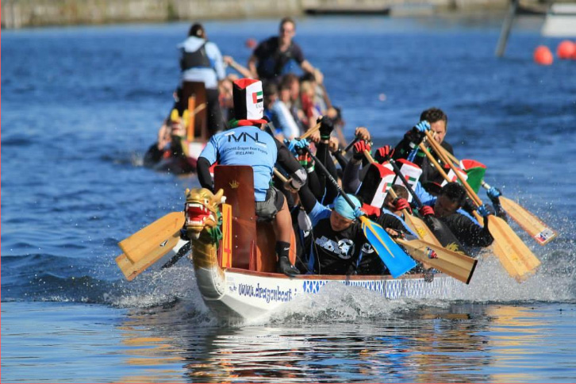
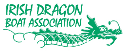

Dragon Boat Race


Dragon boat racing is a highly visual, colourful and exciting team building sport and on Sunday, 21st June 2015, the Irish Dragon Boat Association will be bringing one of its regatta’s to the Irish Maritime Festival in Drogheda at Donors Green.
Teams of 15 people (14 paddlers and a drummer) from local businesses, community and social groups will come together to compete in two rounds of racing over a distance of 200m. The two race times will be combined with the fastest crews going forward to a Minor and Major Final.
There will even be a prize for the Best Fancy Dressed Team!
The event is an excellet opportunity to not only raise funds for some very good local causes, but it also reinforces and increases some of the charities profiles. Heat races will take place from 11am through to 2.30pm in front of Donors Green. The major final will then take place up river at the festival site at 4.15pm – 5.15pm.
This event will be great fun, don’t miss it!!!!!
Day: Sunday 21st June 2015
Time: Final at river from 16:15 - 17:15 Sunday 21st June 2015